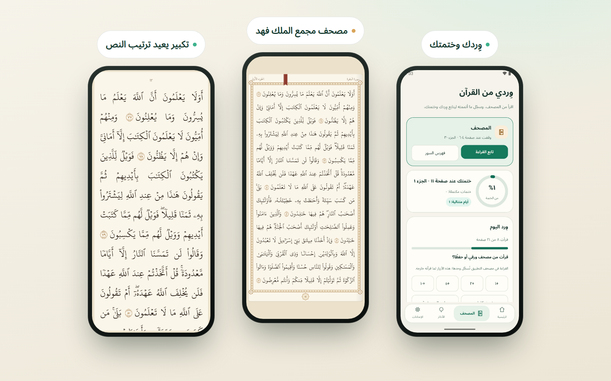
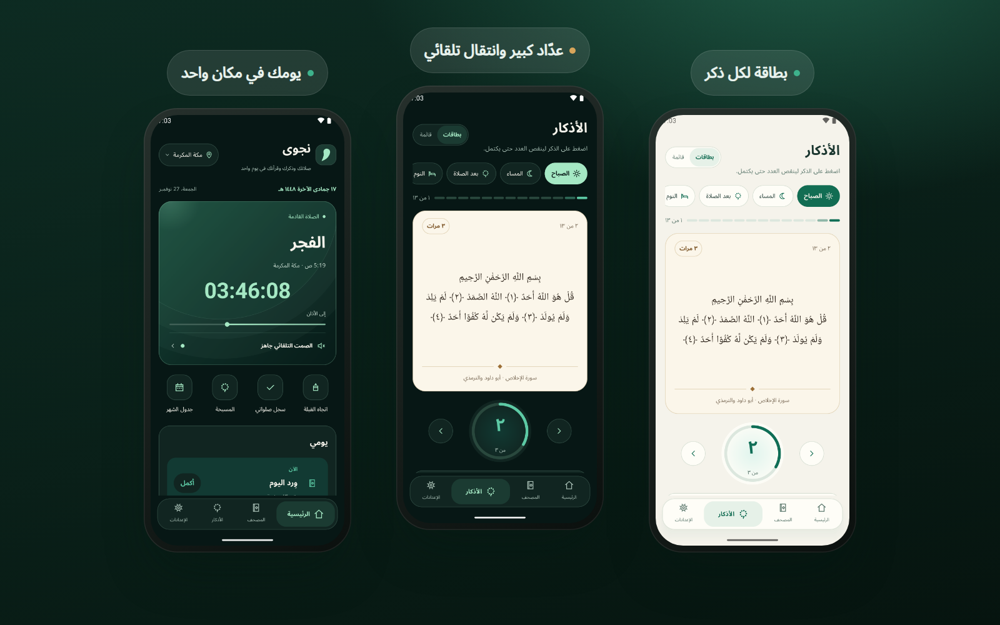
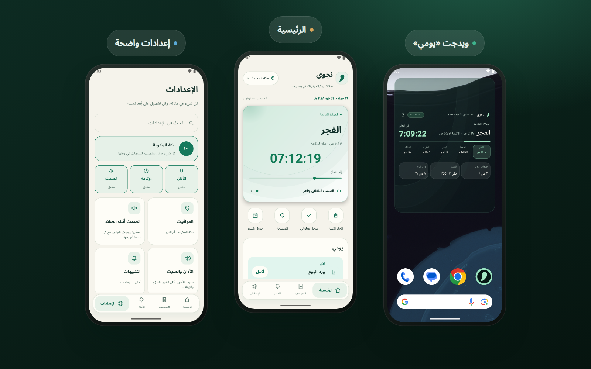

مصحف مجمع الملك فهد
نص المصحف وخطه من المجمع برواية حفص، بصفحات مطابقة لمصحف المدينة. التكبير يكبّر النص نفسه ويعيد ترتيبه.
نجوى 1.7.0 · رفيقك في يوم الصلاة
مواقيت دقيقة وأذان وإقامة في موعدهما، ومصحف بخط مجمع الملك فهد يكبر نصه ويتدفّق، وأذكار ببطاقات وعدّاد، وصمت يعود بعده رنينك. كل ذلك على هاتفك، دون إنترنت.
تنزيل مباشر · Android 8.0 فأحدث · مجاني ومفتوح المصدر

الجديد في 1.7.0
المصحف والأذكار صارا في الشريط السفلي، و«يومي» يجمع صلاتك وذكرك وقرآنك على الشاشة الرئيسية.
نص المصحف وخطه من المجمع برواية حفص، بصفحات مطابقة لمصحف المدينة. التكبير يكبّر النص نفسه ويعيد ترتيبه.
بطاقة لكل ذكر بخط نسخ واضح، وعدّاد دائري كبير ينتقل وحده إلى الذكر التالي. والقائمة باقية لمن يحب.
الصلاة القادمة وما صلّيته وأذكار الوقت ووِردك في بطاقة واحدة، بشفافية تختارها من 0 إلى 100%.
أربعة تبويبات: الرئيسية والمصحف والأذكار والإعدادات. الصمت في الإعدادات، والأدوات صفّ واحد في الرئيسية.
تجربة نجوى
صور حقيقية من التطبيق، كما ستراه على هاتفك.
الصلاة القادمة بعدّاد واضح وشريط يمتلئ من اليمين كلما اقتربت، وحالة الصمت في البطاقة نفسها. فاتح أو داكن، كما تحب.

604 صفحات مطابقة بخمسة عشر سطرًا متساوية، وعلامات الآيات من خط المجمع. كبّر بإصبعين أو بلمستين فيكبر النص ويتدفّق، وتابع ختمتك ووِردك من حيث وقفت. النص والخط لمجمع الملك فهد لطباعة المصحف الشريف، ويُستخدمان بإذنه.

بطاقة لكل ذكر تقلّبها كالصفحات، وعدّاد دائري كبير؛ تلمس البطاقة أو العدّاد فيُحسب، وينتقل وحده عند الإتمام. أذكار الصباح والمساء وبعد الصلاة والنوم والاستيقاظ والمسجد من «حصن المسلم».

ويدجت «يومي» يعرض الصلاة القادمة وعدّادها، ومواقيت اليوم مع علامة تحت كل صلاة سجّلتها، ثم صلواتك وأذكار الوقت ووِردك. وإعدادات مرتّبة تخبرك بصدق إن كان شيء متوقفًا.

يتبدّل لون الويدجت وعبارته مع كل مرحلة، ثم ينتقل إلى الأذان التالي بعد انتهاء مدة الصلاة التي حددتها.

عنوان الصلاة، وموعدا الأذان والإقامة، والمدينة، وعدّاد حيّ إلى الإقامة. واضغط «إيقاف الأذان» ليتوقف الصوت ويبقى العدّاد.

الخصوصية والشفافية
نجوى لا يطلب إذن الإنترنت أصلًا، فلا يستطيع إرسال شيء إلى أي خادم. لا حسابات، ولا إعلانات، ولا أدوات تحليل أو تتبع، والنسخ الاحتياطي التلقائي لـ Android معطّل.
الإعدادات، وسجل تقني محدود لاستعادة الرنين، وعبادتك إن استخدمتها (الصلوات والقضاء، والقراءة والختمة والعلامات، وتقدّم الأذكار والمسبحة)، ونسخة خاصة من صوت أذان تختاره.
ملف نسخة احتياطية تحفظه حيث تشاء (ويمكن تشفيره بكلمة مرور AES‑256‑GCM)، وما تشاركه بنفسك، ورسالة بريد تراجعها وترسلها، و«ربط التطبيقات» إن فعّلته (متوقف افتراضيًا).
العدّاد مبنيّ، لكن قواعده السبع عشرة بانتظار مراجعة مختص شرعي؛ لذا لا يظهر أي رقم أجر في الإصدار الرسمي. وهو بعد الاعتماد رجاءٌ لا حساب.
| الإذن | لماذا |
|---|---|
| الإشعارات | إظهار الأذان والإقامة والتذكيرات، وعدّ الإقامة الحي في شريط الحالة على Android 16. |
| المنبّهات الدقيقة | أن يأتي الأذان والصمت في وقتهما تمامًا. |
| «عدم الإزعاج» وتعديل الصوت | تصميت الهاتف وقت الصلاة ثم إعادته كما كان. |
| التشغيل بعد إعادة التشغيل | إعادة جدولة التنبيهات بعد إعادة تشغيل الهاتف. |
| خدمة في المقدّمة وتشغيل الوسائط | تشغيل صوت الأذان وإبقاء الصمت حتى نهايته. |
| الاهتزاز | مع التنبيهات وعند عدّ الأذكار. |
| الموقع التقريبي | مرة واحدة فقط حين تضغط «تحديد مدينتي»، ولا يُحفظ إلا المدينة. |
لا يطلب نجوى: الإنترنت، ولا جهات الاتصال، ولا الصور أو الملفات العامة، ولا الميكروفون أو الكاميرا، ولا الموقع في الخلفية. أُضيفت منذ 1.3.0 أربعة أذونات فقط (الموقع التقريبي، وتشغيل الوسائط، والإشعارات المميزة، والاهتزاز)، ولم يُضف أي إذن في 1.7. السياسة الكاملة داخل التطبيق: الإعدادات ← معلومات التطبيق ← سياسة الخصوصية.
بداية مطمئنة
خطوات قصيرة، لتكون التجربة كما تحب.
العربية · English · Bahasa Indonesia
اردو · বাংলা · हिन्दी · Türkçe
نزّل ملف APK وثبّته. اسمح بالتثبيت من مصدر التنزيل إذا طلب Android ذلك. يُحدَّث فوق الإصدار السابق مع الحفاظ على إعداداتك.
أكّد مدينتك أو اخترها من أكثر من 459 ألف مكان، واختر طريقة الحساب وحساب العصر.
فعّل الأذان والإقامة والجمعة والصمت التلقائي، وامنح الأذونات اللازمة فقط.
أضف ويدجت «يومي» من الإعدادات ← الويدجت، واضبط شفافيته ومدة الإقامة والصمت حسب مسجدك.
مساحة للسكينة، في يومك
الإصدار 1.7.0 · البناء 118 · ملف موقّع بحجم {{SIZE}} ميبيبايت
بصمة SHA-256 لملف هذا الإصدار:
{{SHA256}}سجل الإصدار وملفات التنزيل · نتائج فحوص GitHub · ملاحظات الإصدار الكاملة
شفرة نجوى مفتوحة بترخيص Apache 2.0؛ يمكنك الاطلاع عليها وتعديلها والمساهمة في تحسينها. أما نص المصحف وخطه فحقوقهما لمجمع الملك فهد لطباعة المصحف الشريف، ويُستخدمان بإذنه.
ساهم في نجوى على GitHub ↗الأذكار من «حصن المسلم». بيانات السور من مشروع تنزيل، والأماكن من GeoNames. المواقيت حسابية؛ راجعها مع تقويم بلدك. الإقامة حسب إعدادك وليست موعدًا معتمدًا للمسجد.